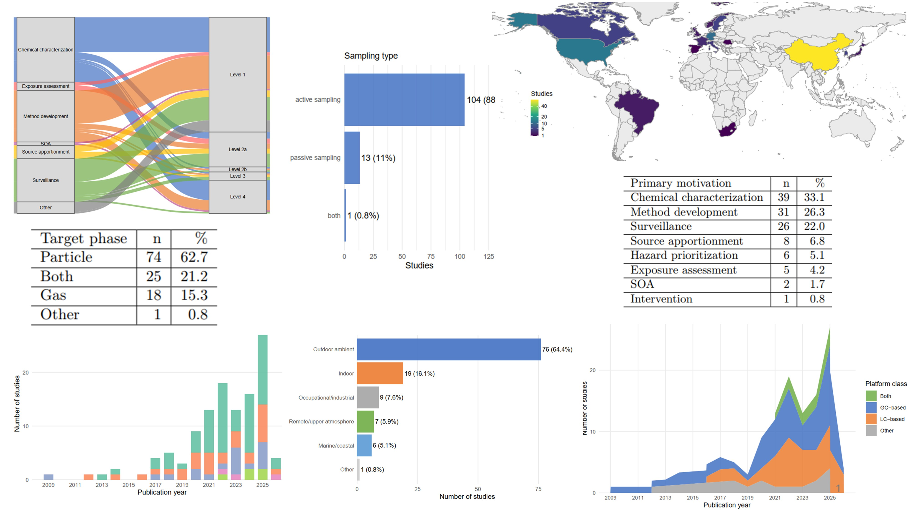
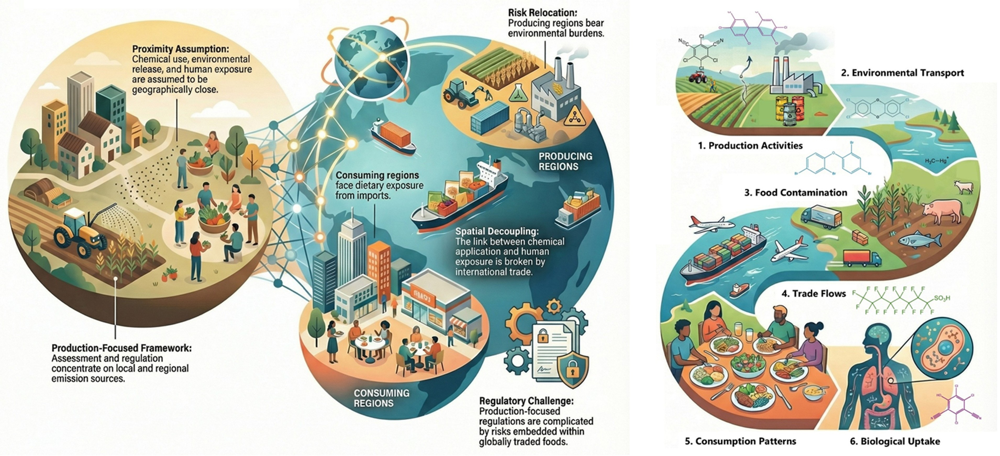
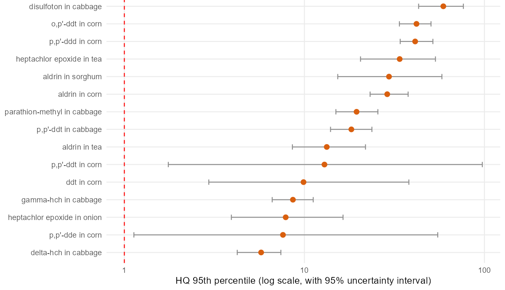

Environmental chemistry
Non-targeted analysis, high-resolution mass spectrometry, GC–MS, and LC–MS/MS.
Non-targeted analysis using high-resolution mass spectrometry (NTA-HRMS) can detect thousands of chemical features without relying on predefined analyte lists. This substantially expands the chemical space covered by environmental monitoring compared with conventional targeted approaches. NTA-HRMS has expanded the scope of environmental monitoring, supported the discovery of previously unmonitored contaminants, and improved the characterization of complex chemical mixtures. Its application to atmospheric chemicals, particularly those in the gas phase, nevertheless remains limited. In our recent scoping review, 76% of the 118 identified studies were published in or after 2020, while passive sampling was used in only 11% of studies (unpublished results).

People worldwide are exposed to hazardous chemicals released throughout the chemical life cycle, from production and use to emissions, disposal, and eventual human uptake. For many chemicals, however, causal links between exposure and health outcomes remain difficult to establish. A central challenge is the complexity of exposure itself: individual behaviours, multiple exposure pathways, diverse chemical mixtures, and source–receptor relationships that are increasingly decoupled across space and time. International trade can separate where chemicals are produced and emitted, where food, feed, and other goods are produced and consumed, where products are used and discarded, and, ultimately, where exposure occurs. My research aims to quantify this decoupling through a source-to-dose modelling framework that traces contaminants through environmental systems and supply chains to human exposure and body burdens far from their original sources. In addition, this work examines inequalities among countries and populations and explores frameworks for allocating responsibility.
Food systems occupy a structurally unique position within the chemical-pollution landscape. Modern food production is often chemically intensive and therefore a source of contamination, while food also functions as a direct carrier of chemical residues into the human body. In an increasingly interconnected global economy, chemicals may be applied or released in one region, regulated under one governance regime, and consumed elsewhere through traded food products. This challenges the traditional assumption that chemical use, environmental release, and exposure occur in close geographic proximity. Producing regions may bear occupational and environmental exposures, while consuming regions experience dietary exposure to contaminants in imported foods. Read the full review →

Demand can drive production, which in turn generates emissions and exposure. Conversely, production and trade can shape consumer behaviour and the distribution of exposure. Trade-related exposure can therefore be understood as both trade-induced and trade-redistributed. In the context of PBDEs, for example, trade-induced exposure arises when demand for electronics, furniture, textiles, vehicles, and other PBDE-containing products drives production and emissions elsewhere, eventually contributing to exposure. Trade-redistributed exposure occurs when contaminated feed and food physically move PBDEs between regions through food systems and trade. Building on the work of Abbasi et al. (2019), I am developing a modelling framework that traces historical PBDE stocks and emissions, contamination of feed and food, and the resulting human body burdens. The longer-term aim is to connect modelled body burdens with disease burden using existing epidemiological evidence.
Existing trade-linked exposure studies typically estimate contaminant transfer as the product of the mass of traded food and the measured or modeled residue concentration. This does not distinguish source contamination from the intrinsic capacity of different food matrices to acquire, retain, and transport chemicals. We propose a thermodynamically based metric to quantify this carrying capacity, defined as the product of a food’s fugacity capacity Zfood and its traded volume, Vfood. Bulk food Z-values are calculated from food composition and a compound’s partitioning into storage lipid, membrane lipid, protein, water, carbohydrate, and other non-lipid organic matter. Vfood and its variability over time are derived from international trade data. Actual contaminant mass transfer can then be expressed as Zfood·Vfood·ffood, where ffood is the chemical fugacity in the commodity at origin, estimated from residue measurements or fate and food-chain models.
A practical comparative risk assessment methodology, with PCB-153 as a worked example. A full workflow showing how to link modelled chemical body-burden distributions to health-burden estimates using comparative risk assessment, implemented in Python and R.
Chemical exposure is a major but unevenly quantified component of environmental health risk worldwide. In many Global South countries, routine chemical monitoring systems remain scarce, despite substantial exposure concern and health burdens. Some efforts by local universities, research institutes, and regulatory agencies do exist, reporting occurrence data for multiple chemicals in the environment and biological matrices. However, a few efforts have been made to systematically collect, organize, analyze, and validate these scattered data for exposure assessment in a rigorous way. The aim is to develop and demonstrate a reproducible framework that integrates evidence appraisal, robust statistical synthesis, and external triangulation to quantify chemical exposure burdens in data-poor settings.
We synthesised Ethiopia’s published food-residue evidence and screened the implied dietary health risks with a fully reproducible framework. We derived independent study-by-pesticide-by-food effect sizes, pooled them in a three-level meta-analysis with cluster-robust variance, and combined them with a survey-weighted two-part national consumption model in a two-dimensional Monte Carlo screen of non-cancer and cancer endpoints, with pre-specified source and parameter sensitivity analyses. The pooled residue concentration was 12.6 µg/kg (95% CI 6.1–26.0) with 100% between-study heterogeneity. Risk was concentrated in a small set of legacy organochlorines and foods.

Much of my previous work involved turning scattered environmental evidence into structured, analyzable datasets. I have used systematic review and meta-analysis to organize field measurements and exposure estimates, and GIS to represent spatially structured environmental-health problems. My earlier GIS work applied multicriteria evaluation to solid-waste landfill site selection in Harar City, Ethiopia, and contributed to a book chapter on GIS applications in solid-waste management.
During my MSc and subsequent work, I synthesized evidence on pesticide pollution in Ethiopian surface waters. This research combined systematic review, meta-analysis, field-concentration databases, model evaluation, and ecological and human-health risk assessment. It demonstrates how environmental-health decisions in data-limited settings can become more quantitative, transparent, and defensible.
This work synthesized evidence on heavy metals in Ethiopian drinking-water sources and translated measured concentrations into nationwide and regional public-health risk estimates.
This earlier research examined household exposure to indoor air pollution, connecting environmental conditions and exposure settings with their public-health relevance in Ethiopia.
Non-targeted analysis, high-resolution mass spectrometry, GC–MS, and LC–MS/MS.
Fugacity-based multimedia models for pollutant fate and transport, including BETR-Global, NEM, and PROTEX; and dynamic substance-flow analysis in the global anthroposphere using CiP-CAFE.
Ecological and human-health risk assessment using frameworks developed by Health Canada, the US EPA, and EFSA; and dose–response derivation based on comparative risk assessment and Global Burden of Disease methodologies.
Systematic review, meta-analysis, evidence mapping, PRISMA-style workflows, and structured exposure databases extracted from the literature.
Spatial modelling and decision support using QGIS, ArcGIS, multicriteria evaluation, and gridded environmental datasets.
I welcome collaborations across environmental chemistry, life-cycle assessment, industrial ecology, ecological economics, epidemiology, biostatistics, public health, evidence synthesis, and metascience.